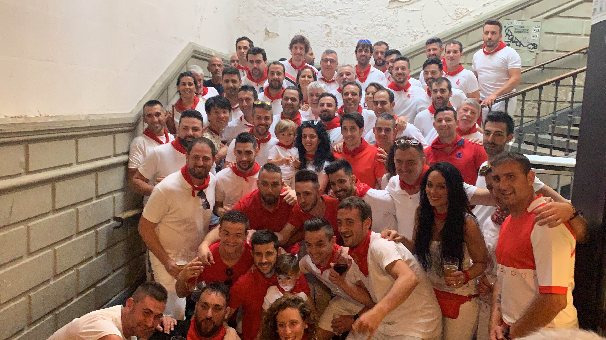

Un entorno que no se puede replicar
Durante unos días al año, Pamplona cambia por completo. La ciudad se transforma en un espacio donde todo sucede más cerca, más intenso y más real.
En ese contexto, las relaciones también cambian. Lo que normalmente requiere tiempo, aquí ocurre de forma natural.
Por qué funciona para empresas
No se trata de “hacer un evento”. Se trata de compartir una experiencia que rompe el entorno habitual y genera conexión real.
Cuando está bien planteado, San Fermín se convierte en un punto de encuentro difícil de olvidar.
Una experiencia cuidada, sin perder autenticidad
La clave no está en acceder a la fiesta, sino en cómo se accede.
Nuestra propuesta consiste en crear un entorno donde la intensidad de San Fermín se pueda vivir con comodidad, sin perder lo que lo hace especial.
Balcones privados, accesos controlados y una organización que permite centrarse en las personas, no en la logística.
Qué hace que funcione
- Selección de ubicaciones con sentido (no solo disponibilidad)
- Accesos organizados, sin fricción ni incertidumbre
- Acompañamiento antes y durante la experiencia
- Opciones de adaptar ritmo, formato y contenidos
- Coordinación completa para que todo fluya
El objetivo es sencillo: que la experiencia funcione sin tener que pensar en ella.
Detalles que construyen la experiencia
En muchos casos, la diferencia no está solo en lo que se vive, sino en cómo se recuerda.
Podemos integrar elementos personalizados dentro de la experiencia: desde piezas sencillas hasta propuestas más cuidadas que acompañan el momento y refuerzan la identidad de la empresa.
Un detalle bien pensado convierte un momento en algo que permanece.
Cómo se puede plantear
No hay un único formato. Estos son algunos de los enfoques más habituales.



Cómo se diseñan las propuestas
Cada experiencia se define en función del número de personas, el momento de la fiesta y el tipo de entorno que se busca.
Por eso no trabajamos con paquetes cerrados, sino con propuestas adaptadas a cada caso.
La diferencia no está en el precio, sino en cómo encaja la experiencia.
De dónde sale esto
Esto no nace como un servicio corporativo. Nace de haber vivido San Fermín desde dentro y entender qué hace que funcione.
Nuestro papel es trasladar esa experiencia a un contexto profesional sin perder su esencia.
Cuéntanos qué te gustaría organizar y te proponemos opciones a medida.
Entender San Fermín
Si quieres ver cómo encajan estas experiencias dentro de la fiesta, puedes explorar:
El Encierro, el Chupinazo o la Procesión.
También puedes profundizar en nuestras guías de San Fermín.